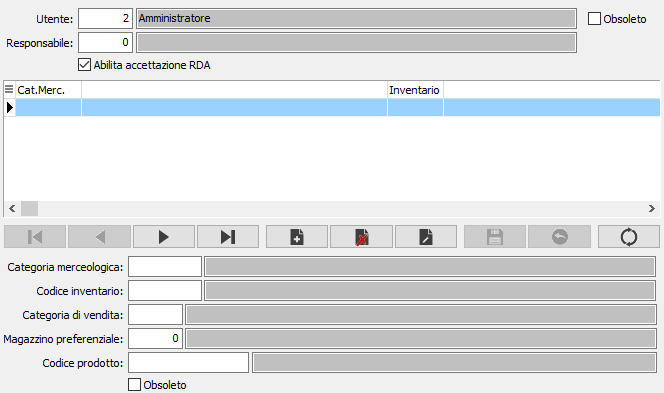

Utenti uffici acquisti
La tabella consente di impostare gli utenti addetti all'ufficio acquisti ed a definire il criterio di instradamento delle richieste di acquisto preparate dal reparto di produzione. Da questa sezione è possibile indicare anche l'utente responsabile ed abilitare l'accettazione diretta della richiesta in fase di inserimento.
Per criterio di instradamento si intende un filtro che sarà applicato in fase di assegnazione, da parte del responsabile, delle varie richieste di acquisto preparate dai reparti di produzione agli utenti dell'ufficio acquisti. I valori inseriti nei campi relativi all'instradamento consentono di indirizzare una richiesta ad un utente piuttosto che ad un altro; per esempio l'utente 1 si occupa delle richieste relative ad una determinata categoria merceologica.

UTENTE: indicare il codice dell'utente addetto all'ufficio acquisti. Sul campo sono disponibili le funzioni di ricerca (F9) sulla tabella utenti.
RESPONSABILE: indicare il codice dell'utente responsabile dell'ufficio acquisti ed in particolare dell'utente sopra inserito; nel caso in cui l'utente sia direttamente responsabile lasciare questo campo a zero. Sul campo sono disponibili le funzioni di ricerca (F9) sulla tabella utenti.
ABILITA ACCETTAZIONE RDA: consente all'utente di effettuare l'accettazione, direttamente in fase di inserimento o generazione, della richiesta do acquisto (casella con segno di spunta). Nel caso l'utente non abbia questa facoltà (casella vuota) la richiesta dovrà essere accettata con l'apposita procedura dal diretto responsabile.
DATI DI INSTRADAMENTO
CATEGORIA MERCEOLOGICA: indica l'eventuale codice della categoria merceologica di competenza dell'utente attivo. Sul campo sono disponibili le funzioni di ricerca (F9) sulla tabella stessa.
CODICE INVENTARIO: indica l'eventuale codice inventario di competenza dell'utente attivo. Sul campo sono disponibili le funzioni di ricerca (F9) sulla tabella stessa.
CATEGORIA DI VENDITA: indica l'eventuale codice della categoria di vendita di competenza dell'utente attivo. Sul campo sono disponibili le funzioni di ricerca (F9) sulla tabella stessa.
MAGAZZINO: indica l'eventuale codice del magazzino di competenza dell'utente attivo. Sul campo sono disponibili le funzioni di ricerca (F9) sulla tabella stessa.
PRODOTTO: indica l'eventuale codice del singolo prodotto di competenza dell'utente attivo. Sul campo sono disponibili le funzioni di ricerca (F9) sulla tabella stessa.
OBSOLETO: flag attivabile dall’utente per inibire il possibile utilizzo dell’elemento di tabella in esame nelle successive transazioni.